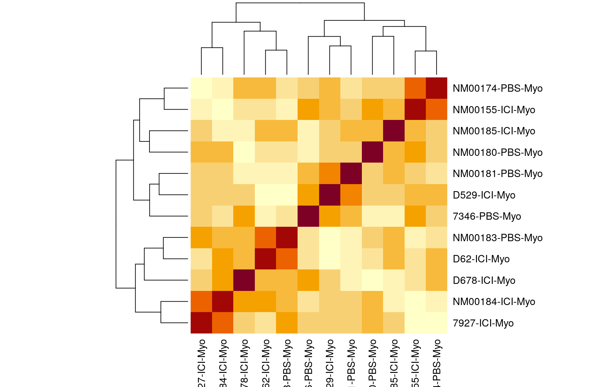

QTL Analysis - binary [Hetero: ICI vs PBS]
Belinda Cornes
2023-01-11
Last updated: 2023-01-11
Checks: 5 2
Knit directory: Serreze-T1D_Workflow/
This reproducible R Markdown analysis was created with workflowr (version 1.7.0). The Checks tab describes the reproducibility checks that were applied when the results were created. The Past versions tab lists the development history.
The R Markdown is untracked by Git. To know which version of the R Markdown file created these results, you’ll want to first commit it to the Git repo. If you’re still working on the analysis, you can ignore this warning. When you’re finished, you can run wflow_publish to commit the R Markdown file and build the HTML.
Great job! The global environment was empty. Objects defined in the global environment can affect the analysis in your R Markdown file in unknown ways. For reproduciblity it’s best to always run the code in an empty environment.
The command set.seed(20230109) was run prior to running the code in the R Markdown file. Setting a seed ensures that any results that rely on randomness, e.g. subsampling or permutations, are reproducible.
Great job! Recording the operating system, R version, and package versions is critical for reproducibility.
Nice! There were no cached chunks for this analysis, so you can be confident that you successfully produced the results during this run.
Using absolute paths to the files within your workflowr project makes it difficult for you and others to run your code on a different machine. Change the absolute path(s) below to the suggested relative path(s) to make your code more reproducible.
| absolute | relative |
|---|---|
| /projects/serreze-lab/USERS/corneb/qtl2/workflowr/Serreze-T1D_Workflow | . |
Great! You are using Git for version control. Tracking code development and connecting the code version to the results is critical for reproducibility.
The results in this page were generated with repository version 850cb80. See the Past versions tab to see a history of the changes made to the R Markdown and HTML files.
Note that you need to be careful to ensure that all relevant files for the analysis have been committed to Git prior to generating the results (you can use wflow_publish or wflow_git_commit). workflowr only checks the R Markdown file, but you know if there are other scripts or data files that it depends on. Below is the status of the Git repository when the results were generated:
Untracked files:
Untracked: analysis/0.1.1_preparing.data_bqc_4.batches_myo.Rmd
Untracked: analysis/0.1_samples_batch_20220729.Rmd
Untracked: analysis/0.1_samples_batch_20220826.Rmd
Untracked: analysis/0.1_samples_batch_20221006.Rmd
Untracked: analysis/0.1_samples_batch_20221116.Rmd
Untracked: analysis/0.2_haplotype_comparison_bqc_4.batches_myo_minprob.Rmd
Untracked: analysis/2.1_sample_bqc_4.batches_myo.Rmd
Untracked: analysis/2.2.1_snp_qc_4.batches_myo.Rmd
Untracked: analysis/2.2.1_snp_qc_4.batches_myo_mis.Rmd
Untracked: analysis/2.4_preparing.data_aqc_4.batches_myo.Rmd
Untracked: analysis/2.4_preparing.data_aqc_4.batches_myo_mis.Rmd
Untracked: analysis/3.1_phenotype.qc_corrected_4.batches_myo.Rmd
Untracked: analysis/3.1_phenotype.qc_corrected_4.batches_myo_mis.Rmd
Untracked: analysis/4.1.1_qtl.analysis_binary_het-ici-myo-yes.vs.het-ici-myo-no_snpsqc_dis_no-x_updated_4.batches_myo.Rmd
Untracked: analysis/4.1.1_qtl.analysis_binary_het-ici-myo-yes.vs.het-ici-myo-no_snpsqc_dis_no-x_updated_4.batches_myo1.Rmd
Untracked: analysis/4.1.1_qtl.analysis_binary_het-ici.vs.het-pbs_snpsqc_dis_no-x_updated_4.batches_myo.Rmd
Untracked: analysis/4.1.1_qtl.analysis_binary_het-ici.vs.het-pbs_snpsqc_dis_no-x_updated_4.batches_myo1.Rmd
Untracked: analysis/4.1.1_qtl.analysis_binary_ici-myo-yes.vs.ici-myo-no_snpsqc_dis_no-x_updated_4.batches_myo.Rmd
Untracked: analysis/4.1.1_qtl.analysis_binary_ici-myo-yes.vs.ici-myo-no_snpsqc_dis_no-x_updated_4.batches_myo1.Rmd
Untracked: analysis/4.1.1_qtl.analysis_binary_ici-sick.vs.ici-eoi_snpsqc_dis_no-x_updated_4.batches_myo.Rmd
Untracked: analysis/4.1.1_qtl.analysis_binary_ici-sick.vs.ici-eoi_snpsqc_dis_no-x_updated_4.batches_myo1.Rmd
Untracked: analysis/4.1.1_qtl.analysis_binary_ici.vs.pbs_snpsqc_dis_no-x_updated_4.batches_myo.Rmd
Untracked: analysis/4.1.1_qtl.analysis_binary_ici.vs.pbs_snpsqc_dis_no-x_updated_4.batches_myo1.Rmd
Untracked: analysis/4.1.1_qtl.analysis_binary_myo-yes.vs.myo-no_snpsqc_dis_no-x_updated_4.batches_myo.Rmd
Untracked: analysis/4.1.1_qtl.analysis_binary_myo-yes.vs.myo-no_snpsqc_dis_no-x_updated_4.batches_myo1.Rmd
Untracked: analysis/4.1.1_qtl.analysis_binary_pbs-myo-yes.vs.pbs-myo-no_snpsqc_dis_no-x_updated_4.batches_myo.Rmd
Untracked: analysis/4.1.1_qtl.analysis_binary_pbs-myo-yes.vs.pbs-myo-no_snpsqc_dis_no-x_updated_4.batches_myo1.Rmd
Untracked: analysis/genotype.frequencies_het-ici-myo-yes.vs.het-ici-myo-no_4.batches_myo.Rmd
Untracked: analysis/genotype.frequencies_het-ici-myo-yes.vs.het-ici-myo-no_4.batches_myo_mis.Rmd
Untracked: analysis/genotype.frequencies_het-ici.vs.het-pbs_4.batches_myo.Rmd
Untracked: analysis/genotype.frequencies_het-ici.vs.het-pbs_4.batches_myo_mis.Rmd
Untracked: analysis/genotype.frequencies_ici-myo-yes.vs.ici-myo-no_4.batches_myo.Rmd
Untracked: analysis/genotype.frequencies_ici-myo-yes.vs.ici-myo-no_4.batches_myo_mis.Rmd
Untracked: analysis/genotype.frequencies_ici-sick.vs.ici-eoi_4.batches_myo.Rmd
Untracked: analysis/genotype.frequencies_ici-sick.vs.ici-eoi_4.batches_myo_mis.Rmd
Untracked: analysis/genotype.frequencies_ici.vs.pbs_4.batches_myo.Rmd
Untracked: analysis/genotype.frequencies_ici.vs.pbs_4.batches_myo_mis.Rmd
Untracked: analysis/genotype.frequencies_myo-yes.vs.myo-no_4.batches_myo.Rmd
Untracked: analysis/genotype.frequencies_myo-yes.vs.myo-no_4.batches_myo_mis.Rmd
Untracked: analysis/genotype.frequencies_pbs-myo-yes.vs.pbs-myo-no_4.batches_myo.Rmd
Untracked: analysis/genotype.frequencies_pbs-myo-yes.vs.pbs-myo-no_4.batches_myo_mis.Rmd
Untracked: analysis/index_4.batches_myo.Rmd
Untracked: code/cc_variants.sqlite
Untracked: code/mouse_genes.sqlite
Untracked: code/mouse_genes_mgi.sqlite
Untracked: data/GM_covar_4.batches_myo.csv
Untracked: data/bad_markers_all_4.batches_myo.RData
Untracked: data/covar_corrected.cleaned_het-ici-myo-yes.vs.het-ici-myo-no_4.batches_myo.csv
Untracked: data/covar_corrected.cleaned_het-ici-myo-yes.vs.het-ici-myo-no_4.batches_myo_mis.csv
Untracked: data/covar_corrected.cleaned_het-ici.vs.het-pbs_4.batches_myo.csv
Untracked: data/covar_corrected.cleaned_het-ici.vs.het-pbs_4.batches_myo_mis.csv
Untracked: data/covar_corrected.cleaned_ici-myo-yes.vs.ici-myo-no_4.batches_myo.csv
Untracked: data/covar_corrected.cleaned_ici-myo-yes.vs.ici-myo-no_4.batches_myo_mis.csv
Untracked: data/covar_corrected.cleaned_ici-sick.vs.ici-eoi_4.batches_myo.csv
Untracked: data/covar_corrected.cleaned_ici-sick.vs.ici-eoi_4.batches_myo_mis.csv
Untracked: data/covar_corrected.cleaned_ici.vs.pbs_4.batches_myo.csv
Untracked: data/covar_corrected.cleaned_ici.vs.pbs_4.batches_myo_mis.csv
Untracked: data/covar_corrected.cleaned_myo-yes.vs.myo-no_4.batches_myo.csv
Untracked: data/covar_corrected.cleaned_myo-yes.vs.myo-no_4.batches_myo_mis.csv
Untracked: data/covar_corrected.cleaned_pbs-myo-yes.vs.pbs-myo-no_4.batches_myo.csv
Untracked: data/covar_corrected.cleaned_pbs-myo-yes.vs.pbs-myo-no_4.batches_myo_mis.csv
Untracked: data/covar_corrected_het-ici-myo-yes.vs.het-ici-myo-no_4.batches_myo.csv
Untracked: data/covar_corrected_het-ici-myo-yes.vs.het-ici-myo-no_4.batches_myo_mis.csv
Untracked: data/covar_corrected_het-ici.vs.het-pbs_4.batches_myo.csv
Untracked: data/covar_corrected_het-ici.vs.het-pbs_4.batches_myo_mis.csv
Untracked: data/covar_corrected_ici-myo-yes.vs.ici-myo-no_4.batches_myo.csv
Untracked: data/covar_corrected_ici-myo-yes.vs.ici-myo-no_4.batches_myo_mis.csv
Untracked: data/covar_corrected_ici-sick.vs.ici-eoi_4.batches_myo.csv
Untracked: data/covar_corrected_ici-sick.vs.ici-eoi_4.batches_myo_mis.csv
Untracked: data/covar_corrected_ici.vs.pbs_4.batches_myo.csv
Untracked: data/covar_corrected_ici.vs.pbs_4.batches_myo_mis.csv
Untracked: data/covar_corrected_myo-yes.vs.myo-no_4.batches_myo.csv
Untracked: data/covar_corrected_myo-yes.vs.myo-no_4.batches_myo_mis.csv
Untracked: data/covar_corrected_pbs-myo-yes.vs.pbs-myo-no_4.batches_myo.csv
Untracked: data/covar_corrected_pbs-myo-yes.vs.pbs-myo-no_4.batches_myo_mis.csv
Untracked: data/e_4.batches_myo.RData
Untracked: data/e_snpg_samqc_4.batches_myo.RData
Untracked: data/errors_ind_4.batches_myo.RData
Untracked: data/genetic_map_4.batches_myo.csv
Untracked: data/genetic_map_4.batches_myo_BC217.csv
Untracked: data/genotype_errors_marker_4.batches_myo.RData
Untracked: data/genotype_freq_marker_4.batches_myo.RData
Untracked: data/gm_allqc_4.batches_myo.RData
Untracked: data/gm_allqc_4.batches_myo_mis.RData
Untracked: data/gm_samqc_4.batches_myo.RData
Untracked: data/gm_serreze.BC312.RData
Untracked: data/het-ici-myo-yes.vs.het-ici-myo-no_gm_qtl_snpsqc_dis_no-x_updated_4.batches_myo.csv
Untracked: data/het-ici-myo-yes.vs.het-ici-myo-no_marker.freq_low.geno.freq.removed_geno.ratio_4.batches_myo.csv
Untracked: data/het-ici-myo-yes.vs.het-ici-myo-no_marker.freq_low.geno.freq.removed_geno.ratio_4.batches_myo_mis.csv
Untracked: data/het-ici-myo-yes.vs.het-ici-myo-no_marker.freq_low.geno.freq.removed_sample.outliers.removed_geno.ratiov_4.batches_myo.csv
Untracked: data/het-ici-myo-yes.vs.het-ici-myo-no_marker.freq_low.geno.freq.removed_sample.outliers.removed_geno.ratiov_4.batches_myo_mis.csv
Untracked: data/het-ici-myo-yes.vs.het-ici-myo-no_marker.freq_low.probs.freq.removed_geno.ratio_4.batches_myo.csv
Untracked: data/het-ici-myo-yes.vs.het-ici-myo-no_marker.freq_low.probs.freq.removed_geno.ratio_4.batches_myo_mis.csv
Untracked: data/het-ici-myo-yes.vs.het-ici-myo-no_marker.freq_low.probs.freq.removed_sample.outliers.removed_geno.ratio_4.batches_myo.csv
Untracked: data/het-ici-myo-yes.vs.het-ici-myo-no_marker.freq_low.probs.freq.removed_sample.outliers.removed_geno.ratio_4.batches_myo_mis.csv
Untracked: data/het-ici.vs.het-pbs_gm_qtl_snpsqc_dis_no-x_updated_4.batches_myo.csv
Untracked: data/het-ici.vs.het-pbs_marker.freq_low.geno.freq.removed_geno.ratio_4.batches_myo.csv
Untracked: data/het-ici.vs.het-pbs_marker.freq_low.geno.freq.removed_geno.ratio_4.batches_myo_mis.csv
Untracked: data/het-ici.vs.het-pbs_marker.freq_low.geno.freq.removed_sample.outliers.removed_geno.ratiov_4.batches_myo.csv
Untracked: data/het-ici.vs.het-pbs_marker.freq_low.geno.freq.removed_sample.outliers.removed_geno.ratiov_4.batches_myo_mis.csv
Untracked: data/het-ici.vs.het-pbs_marker.freq_low.probs.freq.removed_geno.ratio_4.batches_myo.csv
Untracked: data/het-ici.vs.het-pbs_marker.freq_low.probs.freq.removed_geno.ratio_4.batches_myo_mis.csv
Untracked: data/het-ici.vs.het-pbs_marker.freq_low.probs.freq.removed_sample.outliers.removed_geno.ratio_4.batches_myo.csv
Untracked: data/het-ici.vs.het-pbs_marker.freq_low.probs.freq.removed_sample.outliers.removed_geno.ratio_4.batches_myo_mis.csv
Untracked: data/ici-myo-yes.vs.ici-myo-no_marker.freq_low.geno.freq.removed_geno.ratio_4.batches_myo.csv
Untracked: data/ici-myo-yes.vs.ici-myo-no_marker.freq_low.geno.freq.removed_geno.ratio_4.batches_myo_mis.csv
Untracked: data/ici-myo-yes.vs.ici-myo-no_marker.freq_low.geno.freq.removed_sample.outliers.removed_geno.ratiov_4.batches_myo.csv
Untracked: data/ici-myo-yes.vs.ici-myo-no_marker.freq_low.geno.freq.removed_sample.outliers.removed_geno.ratiov_4.batches_myo_mis.csv
Untracked: data/ici-myo-yes.vs.ici-myo-no_marker.freq_low.probs.freq.removed_geno.ratio_4.batches_myo.csv
Untracked: data/ici-myo-yes.vs.ici-myo-no_marker.freq_low.probs.freq.removed_geno.ratio_4.batches_myo_mis.csv
Untracked: data/ici-myo-yes.vs.ici-myo-no_marker.freq_low.probs.freq.removed_sample.outliers.removed_geno.ratio_4.batches_myo.csv
Untracked: data/ici-myo-yes.vs.ici-myo-no_marker.freq_low.probs.freq.removed_sample.outliers.removed_geno.ratio_4.batches_myo_mis.csv
Untracked: data/ici-sick.vs.ici-eoi_blup_sub_chr-10_peak.marker-UNC18805053_lod.drop-1.5_snpsqc_dis_no-x_updated_4.batches_myo.csv
Untracked: data/ici-sick.vs.ici-eoi_blup_sub_chr-10_peak.marker-UNCHS029427_lod.drop-1.5_snpsqc_dis_no-x_updated_4.batches_myo.csv
Untracked: data/ici-sick.vs.ici-eoi_blup_sub_chr-11_peak.marker-UNCHS031753_lod.drop-1.5_snpsqc_dis_no-x_updated_4.batches_myo.csv
Untracked: data/ici-sick.vs.ici-eoi_blup_sub_chr-11_peak.marker-UNCHS031790_lod.drop-1.5_snpsqc_dis_no-x_updated_4.batches_myo.csv
Untracked: data/ici-sick.vs.ici-eoi_blup_sub_chr-11_peak.marker-UNCHS031802_lod.drop-1.5_snpsqc_dis_no-x_updated_4.batches_myo.csv
Untracked: data/ici-sick.vs.ici-eoi_blup_sub_chr-12_peak.marker-JAX00326005_lod.drop-1.5_snpsqc_dis_no-x_updated_4.batches_myo.csv
Untracked: data/ici-sick.vs.ici-eoi_blup_sub_chr-12_peak.marker-UNC20622785_lod.drop-1.5_snpsqc_dis_no-x_updated_4.batches_myo.csv
Untracked: data/ici-sick.vs.ici-eoi_blup_sub_chr-12_peak.marker-UNC21995304_lod.drop-1.5_snpsqc_dis_no-x_updated_4.batches_myo.csv
Untracked: data/ici-sick.vs.ici-eoi_blup_sub_chr-13_peak.marker-JAX00370189_lod.drop-1.5_snpsqc_dis_no-x_updated_4.batches_myo.csv
Untracked: data/ici-sick.vs.ici-eoi_blup_sub_chr-13_peak.marker-UNCHS035661_lod.drop-1.5_snpsqc_dis_no-x_updated_4.batches_myo.csv
Untracked: data/ici-sick.vs.ici-eoi_blup_sub_chr-13_peak.marker-UNCHS037125_lod.drop-1.5_snpsqc_dis_no-x_updated_4.batches_myo.csv
Untracked: data/ici-sick.vs.ici-eoi_blup_sub_chr-14_peak.marker-UNC24597582_lod.drop-1.5_snpsqc_dis_no-x_updated_4.batches_myo.csv
Untracked: data/ici-sick.vs.ici-eoi_blup_sub_chr-14_peak.marker-UNCHS039096_lod.drop-1.5_snpsqc_dis_no-x_updated_4.batches_myo.csv
Untracked: data/ici-sick.vs.ici-eoi_blup_sub_chr-15_peak.marker-UNC25489755_lod.drop-1.5_snpsqc_dis_no-x_updated_4.batches_myo.csv
Untracked: data/ici-sick.vs.ici-eoi_blup_sub_chr-15_peak.marker-UNCHS040614_lod.drop-1.5_snpsqc_dis_no-x_updated_4.batches_myo.csv
Untracked: data/ici-sick.vs.ici-eoi_blup_sub_chr-16_peak.marker-UNCHS042686_lod.drop-1.5_snpsqc_dis_no-x_updated_4.batches_myo.csv
Untracked: data/ici-sick.vs.ici-eoi_blup_sub_chr-17_peak.marker-UNCHS043775_lod.drop-1.5_snpsqc_dis_no-x_updated_4.batches_myo.csv
Untracked: data/ici-sick.vs.ici-eoi_blup_sub_chr-17_peak.marker-UNCHS043777_lod.drop-1.5_snpsqc_dis_no-x_updated_4.batches_myo.csv
Untracked: data/ici-sick.vs.ici-eoi_blup_sub_chr-17_peak.marker-UNCHS043880_lod.drop-1.5_snpsqc_dis_no-x_updated_4.batches_myo.csv
Untracked: data/ici-sick.vs.ici-eoi_blup_sub_chr-18_peak.marker-UNC29296831_lod.drop-1.5_snpsqc_dis_no-x_updated_4.batches_myo.csv
Untracked: data/ici-sick.vs.ici-eoi_blup_sub_chr-18_peak.marker-UNC29297751_lod.drop-1.5_snpsqc_dis_no-x_updated_4.batches_myo.csv
Untracked: data/ici-sick.vs.ici-eoi_blup_sub_chr-19_peak.marker-UNC30069852_lod.drop-1.5_snpsqc_dis_no-x_updated_4.batches_myo.csv
Untracked: data/ici-sick.vs.ici-eoi_blup_sub_chr-19_peak.marker-UNC30386742_lod.drop-1.5_snpsqc_dis_no-x_updated_4.batches_myo.csv
Untracked: data/ici-sick.vs.ici-eoi_blup_sub_chr-1_peak.marker-UNCHS001121_lod.drop-1.5_snpsqc_dis_no-x_updated_4.batches_myo.csv
Untracked: data/ici-sick.vs.ici-eoi_blup_sub_chr-1_peak.marker-UNCHS002308_lod.drop-1.5_snpsqc_dis_no-x_updated_4.batches_myo.csv
Untracked: data/ici-sick.vs.ici-eoi_blup_sub_chr-2_peak.marker-UNC3990359_lod.drop-1.5_snpsqc_dis_no-x_updated_4.batches_myo.csv
Untracked: data/ici-sick.vs.ici-eoi_blup_sub_chr-2_peak.marker-UNCHS006134_lod.drop-1.5_snpsqc_dis_no-x_updated_4.batches_myo.csv
Untracked: data/ici-sick.vs.ici-eoi_blup_sub_chr-3_peak.marker-JAX00105915_lod.drop-1.5_snpsqc_dis_no-x_updated_4.batches_myo.csv
Untracked: data/ici-sick.vs.ici-eoi_blup_sub_chr-3_peak.marker-UNC6020011_lod.drop-1.5_snpsqc_dis_no-x_updated_4.batches_myo.csv
Untracked: data/ici-sick.vs.ici-eoi_blup_sub_chr-4_peak.marker-UNC8099452_lod.drop-1.5_snpsqc_dis_no-x_updated_4.batches_myo.csv
Untracked: data/ici-sick.vs.ici-eoi_blup_sub_chr-4_peak.marker-UNC8161950_lod.drop-1.5_snpsqc_dis_no-x_updated_4.batches_myo.csv
Untracked: data/ici-sick.vs.ici-eoi_blup_sub_chr-5_peak.marker-UNC9678100_lod.drop-1.5_snpsqc_dis_no-x_updated_4.batches_myo.csv
Untracked: data/ici-sick.vs.ici-eoi_blup_sub_chr-5_peak.marker-UNC9678931_lod.drop-1.5_snpsqc_dis_no-x_updated_4.batches_myo.csv
Untracked: data/ici-sick.vs.ici-eoi_blup_sub_chr-6_peak.marker-UNC12162881_lod.drop-1.5_snpsqc_dis_no-x_updated_4.batches_myo.csv
Untracked: data/ici-sick.vs.ici-eoi_blup_sub_chr-6_peak.marker-backupUNC060363218_lod.drop-1.5_snpsqc_dis_no-x_updated_4.batches_myo.csv
Untracked: data/ici-sick.vs.ici-eoi_blup_sub_chr-7_peak.marker-UNC12719038_lod.drop-1.5_snpsqc_dis_no-x_updated_4.batches_myo.csv
Untracked: data/ici-sick.vs.ici-eoi_blup_sub_chr-7_peak.marker-UNCHS022024_lod.drop-1.5_snpsqc_dis_no-x_updated_4.batches_myo.csv
Untracked: data/ici-sick.vs.ici-eoi_blup_sub_chr-8_peak.marker-UNC14948439_lod.drop-1.5_snpsqc_dis_no-x_updated_4.batches_myo.csv
Untracked: data/ici-sick.vs.ici-eoi_blup_sub_chr-8_peak.marker-UNCHS023592_lod.drop-1.5_snpsqc_dis_no-x_updated_4.batches_myo.csv
Untracked: data/ici-sick.vs.ici-eoi_blup_sub_chr-9_peak.marker-UNC16009822_lod.drop-1.5_snpsqc_dis_no-x_updated_4.batches_myo.csv
Untracked: data/ici-sick.vs.ici-eoi_blup_sub_chr-9_peak.marker-UNC17271730_lod.drop-1.5_snpsqc_dis_no-x_updated_4.batches_myo.csv
Untracked: data/ici-sick.vs.ici-eoi_blup_sub_chr-X_peak.marker-UNC31358512_lod.drop-1.5_snpsqc_dis_no-x_updated_4.batches_myo.csv
Untracked: data/ici-sick.vs.ici-eoi_blup_sub_chr-X_peak.marker-UNCHS049472_lod.drop-1.5_snpsqc_dis_no-x_updated_4.batches_myo.csv
Untracked: data/ici-sick.vs.ici-eoi_genes_chr-10_peak.marker-UNC18805053_lod.drop-1.5_snpsqc_dis_no-x_updated_4.batches_myo.csv
Untracked: data/ici-sick.vs.ici-eoi_genes_chr-10_peak.marker-UNCHS029427_lod.drop-1.5_snpsqc_dis_no-x_updated_4.batches_myo.csv
Untracked: data/ici-sick.vs.ici-eoi_genes_chr-11_peak.marker-UNCHS031753_lod.drop-1.5_snpsqc_dis_no-x_updated_4.batches_myo.csv
Untracked: data/ici-sick.vs.ici-eoi_genes_chr-11_peak.marker-UNCHS031790_lod.drop-1.5_snpsqc_dis_no-x_updated_4.batches_myo.csv
Untracked: data/ici-sick.vs.ici-eoi_genes_chr-11_peak.marker-UNCHS031802_lod.drop-1.5_snpsqc_dis_no-x_updated_4.batches_myo.csv
Untracked: data/ici-sick.vs.ici-eoi_genes_chr-12_peak.marker-JAX00326005_lod.drop-1.5_snpsqc_dis_no-x_updated_4.batches_myo.csv
Untracked: data/ici-sick.vs.ici-eoi_genes_chr-12_peak.marker-UNC20622785_lod.drop-1.5_snpsqc_dis_no-x_updated_4.batches_myo.csv
Untracked: data/ici-sick.vs.ici-eoi_genes_chr-12_peak.marker-UNC21995304_lod.drop-1.5_snpsqc_dis_no-x_updated_4.batches_myo.csv
Untracked: data/ici-sick.vs.ici-eoi_genes_chr-13_peak.marker-JAX00370189_lod.drop-1.5_snpsqc_dis_no-x_updated_4.batches_myo.csv
Untracked: data/ici-sick.vs.ici-eoi_genes_chr-13_peak.marker-UNCHS035661_lod.drop-1.5_snpsqc_dis_no-x_updated_4.batches_myo.csv
Untracked: data/ici-sick.vs.ici-eoi_genes_chr-13_peak.marker-UNCHS037125_lod.drop-1.5_snpsqc_dis_no-x_updated_4.batches_myo.csv
Untracked: data/ici-sick.vs.ici-eoi_genes_chr-14_peak.marker-UNC24597582_lod.drop-1.5_snpsqc_dis_no-x_updated_4.batches_myo.csv
Untracked: data/ici-sick.vs.ici-eoi_genes_chr-14_peak.marker-UNCHS039096_lod.drop-1.5_snpsqc_dis_no-x_updated_4.batches_myo.csv
Untracked: data/ici-sick.vs.ici-eoi_genes_chr-15_peak.marker-UNC25489755_lod.drop-1.5_snpsqc_dis_no-x_updated_4.batches_myo.csv
Untracked: data/ici-sick.vs.ici-eoi_genes_chr-15_peak.marker-UNCHS040614_lod.drop-1.5_snpsqc_dis_no-x_updated_4.batches_myo.csv
Untracked: data/ici-sick.vs.ici-eoi_genes_chr-16_peak.marker-UNCHS042686_lod.drop-1.5_snpsqc_dis_no-x_updated_4.batches_myo.csv
Untracked: data/ici-sick.vs.ici-eoi_genes_chr-17_peak.marker-UNCHS043775_lod.drop-1.5_snpsqc_dis_no-x_updated_4.batches_myo.csv
Untracked: data/ici-sick.vs.ici-eoi_genes_chr-17_peak.marker-UNCHS043777_lod.drop-1.5_snpsqc_dis_no-x_updated_4.batches_myo.csv
Untracked: data/ici-sick.vs.ici-eoi_genes_chr-17_peak.marker-UNCHS043880_lod.drop-1.5_snpsqc_dis_no-x_updated_4.batches_myo.csv
Untracked: data/ici-sick.vs.ici-eoi_genes_chr-18_peak.marker-UNC29296831_lod.drop-1.5_snpsqc_dis_no-x_updated_4.batches_myo.csv
Untracked: data/ici-sick.vs.ici-eoi_genes_chr-18_peak.marker-UNC29297751_lod.drop-1.5_snpsqc_dis_no-x_updated_4.batches_myo.csv
Untracked: data/ici-sick.vs.ici-eoi_genes_chr-19_peak.marker-UNC30069852_lod.drop-1.5_snpsqc_dis_no-x_updated_4.batches_myo.csv
Untracked: data/ici-sick.vs.ici-eoi_genes_chr-19_peak.marker-UNC30386742_lod.drop-1.5_snpsqc_dis_no-x_updated_4.batches_myo.csv
Untracked: data/ici-sick.vs.ici-eoi_genes_chr-1_peak.marker-UNCHS001121_lod.drop-1.5_snpsqc_dis_no-x_updated_4.batches_myo.csv
Untracked: data/ici-sick.vs.ici-eoi_genes_chr-1_peak.marker-UNCHS002308_lod.drop-1.5_snpsqc_dis_no-x_updated_4.batches_myo.csv
Untracked: data/ici-sick.vs.ici-eoi_genes_chr-2_peak.marker-UNC3990359_lod.drop-1.5_snpsqc_dis_no-x_updated_4.batches_myo.csv
Untracked: data/ici-sick.vs.ici-eoi_genes_chr-2_peak.marker-UNCHS006134_lod.drop-1.5_snpsqc_dis_no-x_updated_4.batches_myo.csv
Untracked: data/ici-sick.vs.ici-eoi_genes_chr-3_peak.marker-JAX00105915_lod.drop-1.5_snpsqc_dis_no-x_updated_4.batches_myo.csv
Untracked: data/ici-sick.vs.ici-eoi_genes_chr-3_peak.marker-UNC6020011_lod.drop-1.5_snpsqc_dis_no-x_updated_4.batches_myo.csv
Untracked: data/ici-sick.vs.ici-eoi_genes_chr-4_peak.marker-UNC8099452_lod.drop-1.5_snpsqc_dis_no-x_updated_4.batches_myo.csv
Untracked: data/ici-sick.vs.ici-eoi_genes_chr-4_peak.marker-UNC8161950_lod.drop-1.5_snpsqc_dis_no-x_updated_4.batches_myo.csv
Untracked: data/ici-sick.vs.ici-eoi_genes_chr-5_peak.marker-UNC9678100_lod.drop-1.5_snpsqc_dis_no-x_updated_4.batches_myo.csv
Untracked: data/ici-sick.vs.ici-eoi_genes_chr-5_peak.marker-UNC9678931_lod.drop-1.5_snpsqc_dis_no-x_updated_4.batches_myo.csv
Untracked: data/ici-sick.vs.ici-eoi_genes_chr-6_peak.marker-UNC12162881_lod.drop-1.5_snpsqc_dis_no-x_updated_4.batches_myo.csv
Untracked: data/ici-sick.vs.ici-eoi_genes_chr-6_peak.marker-backupUNC060363218_lod.drop-1.5_snpsqc_dis_no-x_updated_4.batches_myo.csv
Untracked: data/ici-sick.vs.ici-eoi_genes_chr-7_peak.marker-UNC12719038_lod.drop-1.5_snpsqc_dis_no-x_updated_4.batches_myo.csv
Untracked: data/ici-sick.vs.ici-eoi_genes_chr-7_peak.marker-UNCHS022024_lod.drop-1.5_snpsqc_dis_no-x_updated_4.batches_myo.csv
Untracked: data/ici-sick.vs.ici-eoi_genes_chr-8_peak.marker-UNC14948439_lod.drop-1.5_snpsqc_dis_no-x_updated_4.batches_myo.csv
Untracked: data/ici-sick.vs.ici-eoi_genes_chr-8_peak.marker-UNCHS023592_lod.drop-1.5_snpsqc_dis_no-x_updated_4.batches_myo.csv
Untracked: data/ici-sick.vs.ici-eoi_genes_chr-9_peak.marker-UNC16009822_lod.drop-1.5_snpsqc_dis_no-x_updated_4.batches_myo.csv
Untracked: data/ici-sick.vs.ici-eoi_genes_chr-9_peak.marker-UNC17271730_lod.drop-1.5_snpsqc_dis_no-x_updated_4.batches_myo.csv
Untracked: data/ici-sick.vs.ici-eoi_genes_chr-X_peak.marker-UNC31358512_lod.drop-1.5_snpsqc_dis_no-x_updated_4.batches_myo.csv
Untracked: data/ici-sick.vs.ici-eoi_genes_chr-X_peak.marker-UNCHS049472_lod.drop-1.5_snpsqc_dis_no-x_updated_4.batches_myo.csv
Untracked: data/ici-sick.vs.ici-eoi_gm_qtl_snpsqc_dis_no-x_updated_4.batches_myo.csv
Untracked: data/ici-sick.vs.ici-eoi_marker.freq_low.geno.freq.removed_geno.ratio_4.batches_myo.csv
Untracked: data/ici-sick.vs.ici-eoi_marker.freq_low.geno.freq.removed_geno.ratio_4.batches_myo_mis.csv
Untracked: data/ici-sick.vs.ici-eoi_marker.freq_low.geno.freq.removed_sample.outliers.removed_geno.ratiov_4.batches_myo.csv
Untracked: data/ici-sick.vs.ici-eoi_marker.freq_low.geno.freq.removed_sample.outliers.removed_geno.ratiov_4.batches_myo_mis.csv
Untracked: data/ici-sick.vs.ici-eoi_marker.freq_low.probs.freq.removed_geno.ratio_4.batches_myo.csv
Untracked: data/ici-sick.vs.ici-eoi_marker.freq_low.probs.freq.removed_geno.ratio_4.batches_myo_mis.csv
Untracked: data/ici-sick.vs.ici-eoi_marker.freq_low.probs.freq.removed_sample.outliers.removed_geno.ratio_4.batches_myo.csv
Untracked: data/ici-sick.vs.ici-eoi_marker.freq_low.probs.freq.removed_sample.outliers.removed_geno.ratio_4.batches_myo_mis.csv
Untracked: data/ici.vs.pbs_gm_qtl_snpsqc_dis_no-x_updated_4.batches_myo.csv
Untracked: data/ici.vs.pbs_marker.freq_low.geno.freq.removed_geno.ratio_4.batches_myo.csv
Untracked: data/ici.vs.pbs_marker.freq_low.geno.freq.removed_geno.ratio_4.batches_myo_mis.csv
Untracked: data/ici.vs.pbs_marker.freq_low.geno.freq.removed_sample.outliers.removed_geno.ratiov_4.batches_myo.csv
Untracked: data/ici.vs.pbs_marker.freq_low.geno.freq.removed_sample.outliers.removed_geno.ratiov_4.batches_myo_mis.csv
Untracked: data/ici.vs.pbs_marker.freq_low.probs.freq.removed_geno.ratio_4.batches_myo.csv
Untracked: data/ici.vs.pbs_marker.freq_low.probs.freq.removed_geno.ratio_4.batches_myo_mis.csv
Untracked: data/ici.vs.pbs_marker.freq_low.probs.freq.removed_sample.outliers.removed_geno.ratio_4.batches_myo.csv
Untracked: data/ici.vs.pbs_marker.freq_low.probs.freq.removed_sample.outliers.removed_geno.ratio_4.batches_myo_mis.csv
Untracked: data/myo-yes.vs.myo-no_marker.freq_low.geno.freq.removed_geno.ratio_4.batches_myo.csv
Untracked: data/myo-yes.vs.myo-no_marker.freq_low.geno.freq.removed_geno.ratio_4.batches_myo_mis.csv
Untracked: data/myo-yes.vs.myo-no_marker.freq_low.geno.freq.removed_sample.outliers.removed_geno.ratiov_4.batches_myo.csv
Untracked: data/myo-yes.vs.myo-no_marker.freq_low.geno.freq.removed_sample.outliers.removed_geno.ratiov_4.batches_myo_mis.csv
Untracked: data/myo-yes.vs.myo-no_marker.freq_low.probs.freq.removed_geno.ratio_4.batches_myo.csv
Untracked: data/myo-yes.vs.myo-no_marker.freq_low.probs.freq.removed_geno.ratio_4.batches_myo_mis.csv
Untracked: data/myo-yes.vs.myo-no_marker.freq_low.probs.freq.removed_sample.outliers.removed_geno.ratio_4.batches_myo.csv
Untracked: data/myo-yes.vs.myo-no_marker.freq_low.probs.freq.removed_sample.outliers.removed_geno.ratio_4.batches_myo_mis.csv
Untracked: data/pbs-myo-yes.vs.pbs-myo-no_gm_qtl_snpsqc_dis_no-x_updated_4.batches_myo.csv
Untracked: data/pbs-myo-yes.vs.pbs-myo-no_marker.freq_low.geno.freq.removed_geno.ratio_4.batches_myo.csv
Untracked: data/pbs-myo-yes.vs.pbs-myo-no_marker.freq_low.geno.freq.removed_geno.ratio_4.batches_myo_mis.csv
Untracked: data/pbs-myo-yes.vs.pbs-myo-no_marker.freq_low.geno.freq.removed_sample.outliers.removed_geno.ratiov_4.batches_myo.csv
Untracked: data/pbs-myo-yes.vs.pbs-myo-no_marker.freq_low.geno.freq.removed_sample.outliers.removed_geno.ratiov_4.batches_myo_mis.csv
Untracked: data/pbs-myo-yes.vs.pbs-myo-no_marker.freq_low.probs.freq.removed_geno.ratio_4.batches_myo.csv
Untracked: data/pbs-myo-yes.vs.pbs-myo-no_marker.freq_low.probs.freq.removed_geno.ratio_4.batches_myo_mis.csv
Untracked: data/pbs-myo-yes.vs.pbs-myo-no_marker.freq_low.probs.freq.removed_sample.outliers.removed_geno.ratio_4.batches_myo.csv
Untracked: data/pbs-myo-yes.vs.pbs-myo-no_marker.freq_low.probs.freq.removed_sample.outliers.removed_geno.ratio_4.batches_myo_mis.csv
Untracked: data/percent_missing_id_4.batches_myo.RData
Untracked: data/percent_missing_marker_4.batches_myo.RData
Untracked: data/pheno_4.batches_myo.csv
Untracked: data/physical_map_4.batches_myo.csv
Untracked: data/physical_map_4.batches_myo_BC217.csv
Untracked: data/qc_info_bad_sample_4.batches_myo.RData
Untracked: data/sample_geno_AHB_4.batches_myo.csv
Untracked: data/sample_geno_AHB_4.batches_myo_BC217.csv
Untracked: data/sample_geno_bc_4.batches_myo.csv
Untracked: data/sample_geno_bc_4.batches_myo_BC217.csv
Untracked: data/sample_geno_raw_4.batches_myo_BC217.csv
Untracked: data/serreze_probs_4.batches_myo.rds
Untracked: data/serreze_probs_allqc_4.batches_myo.rds
Untracked: data/serreze_probs_allqc_4.batches_myo_mis.rds
Untracked: data/summary.cg_4.batches_myo.RData
Unstaged changes:
Modified: analysis/_site.yml
Note that any generated files, e.g. HTML, png, CSS, etc., are not included in this status report because it is ok for generated content to have uncommitted changes.
There are no past versions. Publish this analysis with wflow_publish() to start tracking its development.
Data Information
- Myocarditis Status: Yes
- Murine MHC KO Status: Het
- Drug Treatment(s): ICI, PBS
- Clinical Phenotype(s): Sick, EOI
- Covariates (Myocarditis Score, Age of Clinical Phenotype – if Null, use 40 age at which surviving mice were end of incidence without clinical symptoms, sex)
Loading Data
We will load the data and subset indivials out that are in the groups of interest.
load("data/gm_allqc_4.batches_myo.RData")
#gm_allqc
gm=gm_allqc
gmObject of class cross2 (crosstype "bc")
Total individuals 208
No. genotyped individuals 208
No. phenotyped individuals 208
No. with both geno & pheno 208
No. phenotypes 1
No. covariates 11
No. phenotype covariates 0
No. chromosomes 20
Total markers 32610
No. markers by chr:
1 2 3 4 5 6 7 8 9 10 11 12 13 14 15 16
2498 2407 1748 1770 1649 1835 1544 1515 1773 1102 1744 1214 1442 1497 1109 835
17 18 19 X
674 813 940 4501 #pr <- readRDS("data/serreze_probs_allqc.rds")
#pr <- readRDS("data/serreze_probs.rds")
##extracting animals with ici and pbs group status
#miceinfo <- covars[gm$covar$group == "PBS" | gm$covar$group == "ICI",]
#table(miceinfo$group)
#mice.ids <- rownames(miceinfo)
#gm <- gm[mice.ids]
#gm
#table(gm$covar$group)
#gm$covar$het.ici_vs_het.pbs <- ifelse(gm$covar$group == "PBS", 0, 1)
#gm.full <- gm
covars <- read_csv("data/covar_corrected_het-ici.vs.het-pbs_4.batches_myo.csv")
#removing any missing info
#covars <- subset(covars, covars$het.ici_vs_het.pbs!='')
nrow(covars)[1] 12table(covars$"Myocarditis Status")
YES
12 table(covars$"Murine MHC KO Status")
HET
12 table(covars$"Drug Treatment")
ICI PBS
7 5 table(covars$"clinical pheno")
EOI SICK
6 6 #keeping only informative mice
gm <- gm[covars$Mouse.ID]
gmObject of class cross2 (crosstype "bc")
Total individuals 12
No. genotyped individuals 12
No. phenotyped individuals 12
No. with both geno & pheno 12
No. phenotypes 1
No. covariates 11
No. phenotype covariates 0
No. chromosomes 20
Total markers 32610
No. markers by chr:
1 2 3 4 5 6 7 8 9 10 11 12 13 14 15 16
2498 2407 1748 1770 1649 1835 1544 1515 1773 1102 1744 1214 1442 1497 1109 835
17 18 19 X
674 813 940 4501 table(gm$covar$"Myocarditis Status")
YES
12 table(gm$covar$"Murine MHC KO Status")
HET
12 table(gm$covar$"Drug Treatment")
ICI PBS
7 5 table(gm$covar$"clinical pheno")
EOI SICK
6 6 #pr.qc.ids <- pr
#for (i in 1:20){pr.qc.ids[[i]] = pr.qc.ids[[i]][covars$Mouse.ID,,]}
##removing problmetic marker
#gm <- drop_markers(gm, "UNCHS013106")
##dropping monomorphic markers within the dataset
g <- do.call("cbind", gm$geno)
gf_mar <- t(apply(g, 2, function(a) table(factor(a, 1:2))/sum(a != 0)))
#gn_mar <- t(apply(g, 2, function(a) table(factor(a, 1:2))))
gf_mar <- gf_mar[gf_mar[,2] != "NaN",]
count <- rowSums(gf_mar <=0.05)
low_freq_df <- merge(as.data.frame(gf_mar),as.data.frame(count), by="row.names",all=T)
low_freq_df[is.na(low_freq_df)] <- ''
low_freq_df <- low_freq_df[low_freq_df$count == 1,]
rownames(low_freq_df) <- low_freq_df$Row.names
low_freq <- find_markerpos(gm, rownames(low_freq_df))
low_freq$id <- rownames(low_freq)
nrow(low_freq)[1] 6616low_freq_bad <- merge(low_freq,low_freq_df, by="row.names",all=T)
names(low_freq_bad)[1] <- c("marker")
gf_mar <- gf_mar[gf_mar[,2] != "NaN",]
MAF <- apply(gf_mar, 1, function(x) min(x))
MAF <- as.data.frame(MAF)
MAF$index <- 1:nrow(gf_mar)
gf_mar_maf <- merge(gf_mar,as.data.frame(MAF), by="row.names")
gf_mar_maf <- gf_mar_maf[order(gf_mar_maf$index),]
gfmar <- NULL
gfmar$gfmar_mar_0 <- sum(gf_mar_maf$MAF==0)
gfmar$gfmar_mar_1 <- sum(gf_mar_maf$MAF< 0.01)
gfmar$gfmar_mar_5 <- sum(gf_mar_maf$MAF< 0.05)
gfmar$gfmar_mar_10 <- sum(gf_mar_maf$MAF< 0.10)
gfmar$gfmar_mar_15 <- sum(gf_mar_maf$MAF< 0.15)
gfmar$gfmar_mar_25 <- sum(gf_mar_maf$MAF< 0.25)
gfmar$gfmar_mar_50 <- sum(gf_mar_maf$MAF< 0.50)
gfmar$total_snps <- nrow(as.data.frame(gf_mar_maf))
gfmar <- t(as.data.frame(gfmar))
gfmar <- as.data.frame(gfmar)
gfmar$count <- gfmar$V1
gfmar[c(2)] %>%
kable(escape = F,align = c("ccccccccc"),linesep ="\\hline") %>%
kable_styling(full_width = F) %>%
kable_styling("striped", full_width = F) %>%
row_spec(8 ,bold=T,color= "white",background = "black")| count | |
|---|---|
| gfmar_mar_0 | 6616 |
| gfmar_mar_1 | 6616 |
| gfmar_mar_5 | 6616 |
| gfmar_mar_10 | 6864 |
| gfmar_mar_15 | 6884 |
| gfmar_mar_25 | 7925 |
| gfmar_mar_50 | 27941 |
| total_snps | 32610 |
gm_qc <- drop_markers(gm, low_freq_bad$marker)
gm_qc <- drop_nullmarkers(gm_qc)
gm_qcObject of class cross2 (crosstype "bc")
Total individuals 12
No. genotyped individuals 12
No. phenotyped individuals 12
No. with both geno & pheno 12
No. phenotypes 1
No. covariates 11
No. phenotype covariates 0
No. chromosomes 20
Total markers 25994
No. markers by chr:
1 2 3 4 5 6 7 8 9 10 11 12 13 14 15 16
2281 2228 1581 1629 1502 1664 1431 1412 1626 943 1617 1093 1341 1375 1006 723
17 18 19 X
551 737 884 370 ## dropping disproportionate markers
dismark <- read.csv("data/het-ici.vs.het-pbs_marker.freq_low.geno.freq.removed_geno.ratio_4.batches_myo.csv")
nrow(dismark)[1] 25994names(dismark)[1] <- c("marker")
dismark <- dismark[!dismark$Include,]
nrow(dismark)[1] 21325gm_qc_dis <- drop_markers(gm_qc, dismark$marker)
gm_qc_dis <- drop_nullmarkers(gm_qc_dis)
gm = gm_qc_dis
gmObject of class cross2 (crosstype "bc")
Total individuals 12
No. genotyped individuals 12
No. phenotyped individuals 12
No. with both geno & pheno 12
No. phenotypes 1
No. covariates 11
No. phenotype covariates 0
No. chromosomes 19
Total markers 4669
No. markers by chr:
1 2 3 4 5 6 7 9 10 11 12 13 14 15 16 17 18 19 X
713 2 98 774 54 500 489 498 410 130 396 4 105 114 1 1 228 94 58 markers <- marker_names(gm)
gmapdf <- read.csv("data/genetic_map_4.batches_myo_BC217.csv")
pmapdf <- read.csv("data/physical_map_4.batches_myo_BC217.csv")
#mapdf <- merge(gmapdf,pmapdf, by=c("marker","chr"), all=T)
#rownames(mapdf) <- mapdf$marker
#mapdf <- mapdf[markers,]
#names(mapdf) <- c('marker','chr','gmapdf','pmapdf')
#mapdfnd <- mapdf[!duplicated(mapdf[c(2:3)]),]
pr.qc <- calc_genoprob(gm)
colnames(covars) <- gsub(" ", ".", colnames(covars))Genome-wide scan
For each of the phenotype analyzed, permutations were used for each model to obtain genome-wide LOD significance threshold for p < 0.01, p < 0.05, p < 0.10, respectively, separately for X and automsomes (A).
The table shows the estimated significance thresholds from permutation test.
We also looked at the kinship to see how correlated each sample is. Kinship values between pairs of samples range between 0 (no relationship) and 1.0 (completely identical). The darker the colour the more indentical the pairs are.
Xcovar <- get_x_covar(gm)
addcovar = model.matrix(~sex+age.of.onset+Histology.Score, data = covars)[,-1]
covars$het.ici_vs_het.pbs= as.numeric(covars$het.ici_vs_het.pbs)
kinship <- calc_kinship(pr.qc)
heatmap(kinship)
operm <- scan1perm(pr.qc, covars["het.ici_vs_het.pbs"], model="binary", addcovar=addcovar, n_perm=1000, perm_Xsp=TRUE, chr_lengths=chr_lengths(gm$gmap))
summary_table<-data.frame(unclass(summary(operm, alpha=c(0.01, 0.05, 0.1))))
names(summary_table) <- c("autosomes","X")
summary_table$significance.level <- rownames(summary_table)
rownames(summary_table) <- NULL
summary_table[c(3,1:2)] %>%
kable(escape = F,align = c("ccc")) %>%
kable_styling("striped", full_width = T) %>%
column_spec(1, bold=TRUE)| significance.level | autosomes | X |
|---|---|---|
| 0.01 | 0.60206 | 0.60206 |
| 0.05 | 0.60206 | 0.60206 |
| 0.1 | 0.60206 | 0.60206 |
The figures below show QTL maps for each phenotype
#out <- scan1(pr.qc, covars["het.ici_vs_het.pbs"], Xcovar=Xcovar, model="binary")
out <- scan1(pr.qc, covars["het.ici_vs_het.pbs"], model="binary", addcovar=addcovar)
summary_table<-data.frame(unclass(summary(operm, alpha=c(0.01, 0.05, 0.1))))
plot_lod<-function(out,map){
for (i in 1:dim(out)[2]){
#png(filename=paste0("/Users/chenm/Documents/qtl/Jai/",colnames(out)[i], "_lod.png"))
ymx <- maxlod(out) # overall maximum LOD score
plot(out, map, lodcolumn=i, col="slateblue", ylim=c(0, ymx+0.5))
#legend("topright", lwd=2, colnames(out)[i], bg="gray90")
title(main = paste0(colnames(out)[i], " [positions in cM]"))
add_threshold(map, summary(operm,alpha=0.1), col = 'purple')
add_threshold(map, summary(operm, alpha=0.05), col = 'red')
add_threshold(map, summary(operm, alpha=0.01), col = 'blue')
##par(mar=c(5.1, 6.1, 1.1, 1.1))
#ymx <- 11 # overall maximum LOD score
#plot(out, map, lodcolumn=i, col="slateblue", ylim=c(0, ymx+0.5))
##legend("topright", lwd=2, colnames(out)[i], bg="gray90")
#title(main = paste0(colnames(out)[i], " [positions in cM] \n(using same scale as eoi vs ici for easier comparison)"))
#add_threshold(map, summary(operm, alpha=0.1), col = 'purple')
#add_threshold(map, summary(operm, alpha=0.05), col = 'red')
#add_threshold(map, summary(operm, alpha=0.01), col = 'blue')
##for (j in 1: dim(summary_table)[1]){
## abline(h=summary_table[j, i],col="red")
## text(x=400, y =summary_table[j, i]+0.12, labels = paste("p=", row.names(summary_table)[j]))
##}
##dev.off()
}
}
plot_lod(out,gm$gmap)
LOD peaks
The table below shows QTL peaks associated with the phenotype. We use the 95% threshold from the permutations to find peaks.
Centimorgan (cM)
peaks <- find_peaks(out, gm$gmap, threshold=summary(operm,alpha=0.05)$A, thresholdX = summary(operm,alpha=0.05)$X, peakdrop=3, drop=1.5)
if(nrow(peaks) >0){
peaks$marker <- find_marker(gm$gmap, chr=peaks$chr,pos=peaks$pos)
names(peaks)[2] <- c("phenotype")
peaks <- peaks[-1]
rownames(peaks) <- NULL
print(kable(peaks, escape = F, align = c("cccccccc"), "html")
%>% kable_styling("striped", full_width = T)%>%
column_spec(1, bold=TRUE)
)
#plot only peak chromosomes
plot_lod_chr<-function(out,map,chrom){
for (i in 1:dim(out)[2]){
#png(filename=paste0("/Users/chenm/Documents/qtl/Jai/",colnames(out)[i], "_lod.png"))
#par(mar=c(5.1, 6.1, 1.1, 1.1))
ymx <- maxlod(out) # overall maximum LOD score
plot(out, map, chr = chrom, lodcolumn=i, col="slateblue", ylim=c(0, ymx+0.5))
#legend("topright", lwd=2, colnames(out)[i], bg="gray90")
title(main = paste0(colnames(out)[i], " - chr", chrom, " [positions in cM]"))
add_threshold(map, summary(operm,alpha=0.1), col = 'purple')
add_threshold(map, summary(operm, alpha=0.05), col = 'red')
add_threshold(map, summary(operm, alpha=0.01), col = 'blue')
#for (j in 1: dim(summary_table)[1]){
# abline(h=summary_table[j, i],col="red")
# text(x=400, y =summary_table[j, i]+0.12, labels = paste("p=", row.names(summary_table)[j]))
#}
#dev.off()
ymx <- 11
plot(out, map, chr = chrom, lodcolumn=i, col="slateblue", ylim=c(0, ymx+0.5))
#legend("topright", lwd=2, colnames(out)[i], bg="gray90")
title(main = paste0(colnames(out)[i], " - chr", chrom, " [positions in cM]\n(using same scale as eoi vs. ici for easier comparison)"))
add_threshold(map, summary(operm,alpha=0.1), col = 'purple')
add_threshold(map, summary(operm, alpha=0.05), col = 'red')
add_threshold(map, summary(operm, alpha=0.01), col = 'blue')
}
}
for(i in unique(peaks$chr)){
#for (i in 1:nrow(peaks)){
#plot_lod_chr(out,gm$gmap, peaks$chr[i])
plot_lod_chr(out,gm$gmap, i)
}
} else {
print(paste0("There are no peaks that have a LOD that reaches suggestive (p<0.05) level of ",summary(operm,alpha=0.05)$A, " [autosomes]/",summary(operm,alpha=0.05)$X, " [x-chromosome]"))
}[1] “There are no peaks that have a LOD that reaches suggestive (p<0.05) level of 0.602060022513272 [autosomes]/0.602060016152448 [x-chromosome]”
Megabase (MB)
print("peaks in MB positions")[1] “peaks in MB positions”
peaks_mba <- find_peaks(out, gm$pmap, threshold=summary(operm,alpha=0.05)$A, thresholdX = summary(operm,alpha=0.05)$X, peakdrop=3, drop=1.5)
if(nrow(peaks) >0){
peaks_mba$marker <- find_marker(gm$pmap, chr=peaks_mba$chr,pos=peaks_mba$pos)
names(peaks_mba)[2] <- c("phenotype")
peaks_mba <- peaks_mba[-1]
rownames(peaks_mba) <- NULL
print(kable(peaks_mba, escape = F, align = c("cccccccc"), "html")
%>% kable_styling("striped", full_width = T)%>%
column_spec(1, bold=TRUE)
)
plot_lod_chr_mb<-function(out,map,chrom){
for (i in 1:dim(out)[2]){
#png(filename=paste0("/Users/chenm/Documents/qtl/Jai/",colnames(out)[i], "_lod.png"))
#par(mar=c(5.1, 6.1, 1.1, 1.1))
ymx <- maxlod(out) # overall maximum LOD score
plot(out, map, chr = chrom, lodcolumn=i, col="slateblue", ylim=c(0, ymx+0.5))
#legend("topright", lwd=2, colnames(out)[i], bg="gray90")
title(main = paste0(colnames(out)[i], " - chr", chrom, " [positions in MB]"))
add_threshold(map, summary(operm,alpha=0.1), col = 'purple')
add_threshold(map, summary(operm, alpha=0.05), col = 'red')
add_threshold(map, summary(operm, alpha=0.01), col = 'blue')
#for (j in 1: dim(summary_table)[1]){
# abline(h=summary_table[j, i],col="red")
# text(x=400, y =summary_table[j, i]+0.12, labels = paste("p=", row.names(summary_table)[j]))
#}
#dev.off()
ymx <- 11
plot(out, map, chr = chrom, lodcolumn=i, col="slateblue", ylim=c(0, ymx+0.5))
#legend("topright", lwd=2, colnames(out)[i], bg="gray90")
title(main = paste0(colnames(out)[i], " - chr", chrom, " [positions in MB]\n(using same scale as eoi vs. ici for easier comparison)"))
add_threshold(map, summary(operm,alpha=0.1), col = 'purple')
add_threshold(map, summary(operm, alpha=0.05), col = 'red')
add_threshold(map, summary(operm, alpha=0.01), col = 'blue')
}
}
for(i in unique(peaks_mba$chr)){
#for (i in 1:nrow(peaks_mba)){
#plot_lod_chr_mb(out,gm$pmap, peaks_mba$chr[i])
plot_lod_chr_mb(out,gm$pmap,i)
}
} else {
print(paste0("There are no peaks that have a LOD that reaches suggestive (p<0.05) level of ",summary(operm,alpha=0.05)$A, " [autosomes]/",summary(operm,alpha=0.05)$X, " [x-chromosome]"))
}[1] “There are no peaks that have a LOD that reaches suggestive (p<0.05) level of 0.602060022513272 [autosomes]/0.602060016152448 [x-chromosome]”
QTL effects
For each peak LOD location we give a list of gene
query_variants <- create_variant_query_func("code/cc_variants.sqlite")
query_genes <- create_gene_query_func("code/mouse_genes_mgi.sqlite")
if(nrow(peaks) >0){
for (i in 1:nrow(peaks)){
g <- maxmarg(pr.qc, gm$gmap, chr=peaks$chr[i], pos=peaks$pos[i], return_char=TRUE)
#png(filename=paste0("/Users/chenm/Documents/qtl/Jai/","qtl_effect_", i, ".png"))
#par(mar=c(4.1, 4.1, 1.5, 0.6))
plot_pxg(g, covars[,peaks$phenotype[i]], ylab=peaks$phenotype[i], sort=FALSE)
title(main = paste0("chr: ", chr=peaks$chr[i],"; pos: ", peaks$pos[i], "cM /",peaks_mba$pos[i],"MB\n(",peaks$phenotype[i]," )"), line=0.2)
##dev.off()
chr = peaks$chr[i]
# Plot 2
pr_sub <- pull_genoprobint(pr.qc, gm$gmap, chr, c(peaks$ci_lo[i], peaks$ci_hi[i]))
blup <- scan1blup(pr.qc[,chr], covars[peaks$phenotype[i]],addcovar = addcovar)
blup_sub <- scan1blup(pr_sub[,chr], covars[peaks$phenotype[i]], addcovar = addcovar)
write.csv(as.data.frame(blup_sub), paste0("data/het-ici.vs.het-pbs_blup_sub_chr-",chr,"_peak.marker-",peaks$marker[i],"_lod.drop-1.5_snpsqc_dis_no-x_updated_4.batches_myo.csv"), quote=F)
plot_coef(blup,
gm$gmap, columns=1:2,
bgcolor="gray95", legend="bottomleft",
main = paste0("chr: ", chr=peaks$chr[i],"; pos: ", peaks$pos[i], "cM /",peaks_mba$pos[i],"MB\n(",peaks$phenotype[i]," [scan1blup; positions in cM])")
)
plot_coef(blup_sub,
gm$gmap, columns=1:2,
bgcolor="gray95", legend="bottomleft",
main = paste0("chr: ", chr=peaks$chr[i],"; pos: ", peaks$pos[i], "cM /",peaks_mba$pos[i],"MB\n(",peaks$phenotype[i],"; 1.5 LOD drop interval [scan1blup; positions in cM])")
)
#Table 1
chr = peaks_mba$chr[i]
start=as.numeric(peaks_mba$ci_lo[i])
end=as.numeric(peaks_mba$ci_hi[i])
genesgss = query_genes(chr, start, end)
write.csv(genesgss, file=paste0("data/het-ici.vs.het-pbs_genes_chr-",chr,"_peak.marker-",peaks$marker[i],"_lod.drop-1.5_snpsqc_dis_no-x_updated_4.batches_myo.csv"), quote=F)
rownames(genesgss) <- NULL
genesgss$strand_old = genesgss$strand
genesgss$strand[genesgss$strand=="+"] <- "positive"
genesgss$strand[genesgss$strand=="-"] <- "negative"
print(kable(genesgss[,c("chr","type","start","stop","strand","ID","Name","Dbxref","gene_id","mgi_type","description")], "html") %>% kable_styling("striped", full_width = T))
}
} else {
print(paste0("There are no peaks that have a LOD that reaches suggestive (p<0.05) level of ",summary(operm,alpha=0.05)$A, " [autosomes]/",summary(operm,alpha=0.05)$X, " [x-chromosome]"))
}[1] “There are no peaks that have a LOD that reaches suggestive (p<0.05) level of 0.602060022513272 [autosomes]/0.602060016152448 [x-chromosome]”
R/qtl
scanone
R version 4.0.3 (2020-10-10)
Platform: x86_64-pc-linux-gnu (64-bit)
Running under: Ubuntu 20.04.5 LTS
Matrix products: default
BLAS: /usr/lib/x86_64-linux-gnu/openblas-pthread/libblas.so.3
LAPACK: /usr/lib/x86_64-linux-gnu/openblas-pthread/liblapack.so.3
locale:
[1] LC_CTYPE=en_US.UTF-8 LC_NUMERIC=C
[3] LC_TIME=en_US.UTF-8 LC_COLLATE=en_US.UTF-8
[5] LC_MONETARY=en_US.UTF-8 LC_MESSAGES=en_US.UTF-8
[7] LC_PAPER=en_US.UTF-8 LC_NAME=C
[9] LC_ADDRESS=C LC_TELEPHONE=C
[11] LC_MEASUREMENT=en_US.UTF-8 LC_IDENTIFICATION=C
attached base packages:
[1] stats graphics grDevices utils datasets methods base
other attached packages:
[1] abind_1.4-5 qtl2_0.22 reshape2_1.4.4 ggplot2_3.4.0
[5] tibble_3.1.8 psych_2.2.9 readxl_1.4.1 cluster_2.1.4
[9] dplyr_1.0.10 optparse_1.7.3 rhdf5_2.34.0 mclust_6.0.0
[13] tidyr_1.2.1 data.table_1.14.6 knitr_1.41 kableExtra_1.3.4
[17] workflowr_1.7.0
loaded via a namespace (and not attached):
[1] httr_1.4.4 sass_0.4.4 bit64_4.0.5 jsonlite_1.7.2
[5] viridisLite_0.4.1 bslib_0.4.2 assertthat_0.2.1 getPass_0.2-2
[9] highr_0.8 blob_1.2.1 cellranger_1.1.0 yaml_2.2.1
[13] pillar_1.8.1 RSQLite_2.2.3 lattice_0.20-41 glue_1.6.2
[17] digest_0.6.31 promises_1.1.1 rvest_1.0.3 colorspace_2.0-0
[21] htmltools_0.5.4 httpuv_1.5.5 plyr_1.8.8 pkgconfig_2.0.3
[25] purrr_0.3.4 scales_1.2.1 webshot_0.5.4 processx_3.8.0
[29] svglite_2.1.0 whisker_0.4 getopt_1.20.3 later_1.1.0.1
[33] git2r_0.28.0 generics_0.1.3 cachem_1.0.3 withr_2.5.0
[37] cli_3.6.0 mnormt_2.1.1 magrittr_2.0.1 memoise_2.0.1
[41] evaluate_0.19 ps_1.5.0 fs_1.5.2 fansi_0.4.2
[45] nlme_3.1-149 xml2_1.3.3 tools_4.0.3 lifecycle_1.0.3
[49] stringr_1.4.0 Rhdf5lib_1.12.1 munsell_0.5.0 callr_3.7.3
[53] compiler_4.0.3 jquerylib_0.1.3 systemfonts_1.0.1 rlang_1.0.6
[57] grid_4.0.3 rhdf5filters_1.2.1 rstudioapi_0.13 rmarkdown_2.19
[61] gtable_0.3.0 DBI_1.1.1 R6_2.5.0 bit_4.0.4
[65] fastmap_1.1.0 utf8_1.1.4 rprojroot_2.0.2 stringi_1.5.3
[69] parallel_4.0.3 Rcpp_1.0.6 vctrs_0.5.1 tidyselect_1.2.0
[73] xfun_0.36